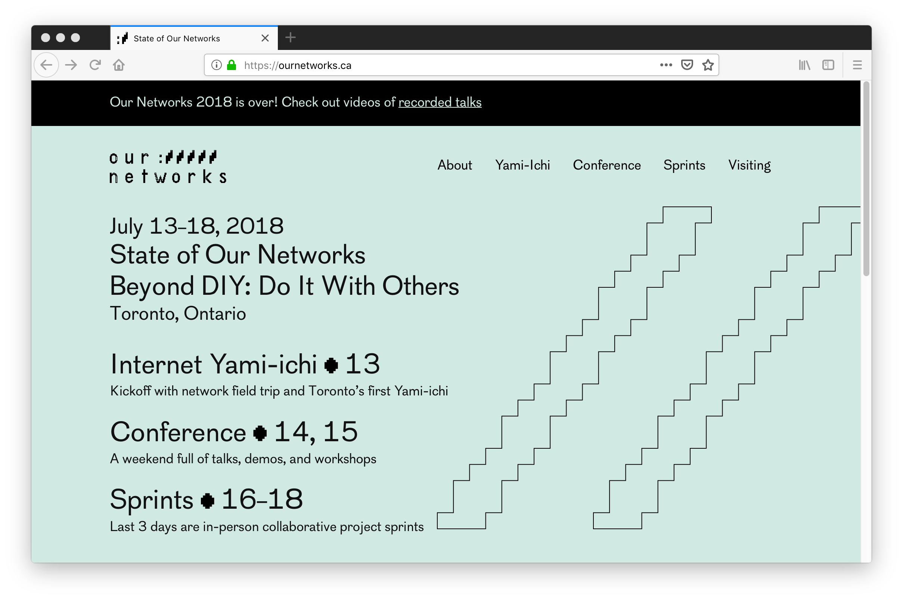
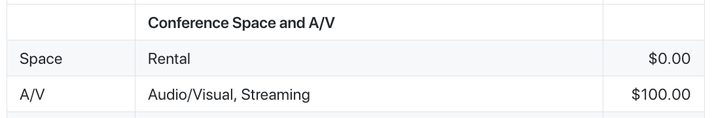

title: IPFS Live Streaming @ Our Networks 2018 class: animation-fade layout: true <!-- This slide will serve as the base layout for all your slides --> .bottom-bar[ {{title}} ] --- class: impact .big[IPFS Live Streaming] .big[.soft[at Our Networks 2018]] .soft[.small[Yurko • Elon • Benedict]] .soft[.small[<i class="fas fa-ellipsis-h"></i> Toronto Mesh]] --- # Our Networks 2018 .center[</img>] --- # Live Streaming Small conference of 100 people with limited AV budget </img> -- At Toronto Mesh, Elon + Yurko have been prototyping video streaming over IPFS -- >"Why don't we live stream the conference over IPFS" .small[_--some optimistic person_] -- - Content distribution over easily scalable infrastructure - Make reproducible for next year and similar-sized conferences - Dogfood our decentralized tech and test its limits --- # The Project Started . . . .center[ </img> First commit on .hi1[May 19] <i class="fas fa-arrow-right"></i> Conference on .hi1[July 13] we have about .hi2[2 months] ] --- # Our _"Stack"_ - .hi1[**HDMI capture cards + AV hardware**] digitize irl content -- - .hi1[**OBS Studio**] manage stream on premise -- - .hi1[**OpenVPN**] authenticate content publishing -- - .hi1[**Digital Ocean**] host servers + manage DNS -- - .hi1[**NGINX with RTMP module**] proxy traffic and run real-time server -- - .hi1[**FFmpeg**] encode HLS streams -- - .hi1[**IPFS**] store and distribute content -- - .hi1[**Video.js**] play HLS content from website -- - .hi1[**Terraform**] make cloud infrastructure reproducible --- class: long contain background-image: url(assets/ournetworks-setup.png) --- class: alt-bg alt # Publishing Recorded Video to IPFS <i class="fas fa-ellipsis-v"></i> Feed video file into the IPFS machine and distribute content hash .center[ .middle[ .col-4[ .huge[Recorded] .huge[MP4] .huge[video] ] .col-4[ <i class="fas fa-arrow-right"></i> </img> <i class="fas fa-arrow-right"></i> ] .col-4[ .huge[IPFS] .huge[content] .huge[hash] ] ] ] --- class: impact _How do you hash something that has not happened yet?_ --- # HLS <i class="fas fa-ellipsis-v"></i> HTTP Live Streaming - Developed by Apple Inc. - Released in 2009 - Breaks the stream into small chunks - Sequence of chunks make up the stream - A playlist describes the sequence --- class: alt-bg alt # HLS <i class="fas fa-ellipsis-v"></i> `m3u8` Playlist + `ts` Chunks </img> --- class: impact _What if we hash each individual chunk?_ --- class: alt-bg alt # The IPFS Publishing Loop .col-9[ - .alt[Video source from RTMP server] - Use FFmpeg to create an HLS stream of chunks - Wait until chunk is ready ``` inotifywait -e close_write <filename.ts> ``` - Add to IPFS ``` ipfs add <filename.ts> ``` - Remember hash to rewrite m3u8 playlist ] .col-3[ </img> ] --- # IPFS Hashes of Video Chunks .small[.small[ ``` added QmeoZZdm4ZfMZ1S5LRfkmwxqZ3bTafH9fDPWEHKuo1NQWy 201807021737-LIVE52.ts 2018-07-02-17-50-32.ts 18.299000 added QmXbmGjZemK7D6b5NMUZsPdPXAsANPvwGZJckZyeB7Z21a 201807021737-LIVE53.ts 2018-07-02-17-50-48.ts 16.068000 added QmXfRvMcfVd9XH2gy5VSB1xbGNzQ1i62Va6pRrUPk8nbrN 201807021737-LIVE54.ts 2018-07-02-17-50-58.ts 9.866000 added QmPzghqaMvgg9sGV4uJMWUNjyiMDYQBEn69ChaLEmC93Cf 201807021737-LIVE55.ts 2018-07-02-17-51-13.ts 14.767000 ``` ]] <br /> # Rewritten HLS Playlist .small[ ``` #EXTINF:18.299000, http://ipfs-server.mesh.world:8080/ipfs/QmeoZZdm4ZfMZ1S5LRfkmwxqZ3bTafH9fDPWEHKuo1NQWy #EXTINF:16.068000, http://ipfs-server.mesh.world:8080/ipfs/QmXbmGjZemK7D6b5NMUZsPdPXAsANPvwGZJckZyeB7Z21a #EXTINF:9.866000, http://ipfs-server.mesh.world:8080/ipfs/QmXfRvMcfVd9XH2gy5VSB1xbGNzQ1i62Va6pRrUPk8nbrN #EXTINF:14.767000, http://ipfs-server.mesh.world:8080/ipfs/QmPzghqaMvgg9sGV4uJMWUNjyiMDYQBEn69ChaLEmC93Cf ``` ] --- # Publish HLS Playlist <i class="fas fa-ellipsis-v"></i> but the file will change ~every 20 seconds - Publish mutable file to IPNS ``` m3u8hash=$(ipfs add current.m3u8 | awk '{print $2}') ipfs name publish $m3u8hash & ``` -- - Web video player can play that through the gateway -- - .hi2[**_Mission accomplished... SOLID IDEA_**] -- - .hi1[**_What could possibly go wrong?™_**] --- class: impact _There are only two hard things in computer science..._ --- class: center middle `0.` Cache Invalidation -- `1.` Naming Things -- `7.` Asynchronous Callbacks -- `2.` Off-by-One Errors --- class: impact .huge[_We hit all of them_] --- # `0.` Cache Invalidation - IPNS takes 2 minutes to publish, that's 4x too slow assuming chunks are 30 seconds - IPNS then 2 minutes to resolve, that's a long wait to start playback - IPNS with DHT takes too long because too many people are behind NAT - IPNS with pubsub publishes and resolves very quickly, _most of the time_ --- class: impact `Solution:` _Host HLS playlist over HTTP_ --- # `1.` Naming Things - If FFmpeg restarts, it starts enumerating from the beginning - Duplicate names in the log file - Replace name with hash script fails - Video stream stalls --- class: impact `Solution:` _Name each FFmpeg session uniquely and write a new playlist_ --- # `7.` Asynchronous Callbacks We depend on a series of events - FFmpeg in its own thread - IPFS in its own thread - Processing script in its own thread -- - .hi1[**_What could possibly go wrong?™_**] --- class: impact `Solution:` _Self-recovery measures and put everything in a loop_ --- # `2.` Off-by-One Errors - HLS sequences have time code in them - Incorrectly ordered sequences stall the player - Re-writing of the time code led to limited success - HLS has a better solution... --- class: impact `Solution:` _Use HLS tag that indicates beginning of a new sequence_ --- class: impact .alt[.huge[Let's try it now at]] <br /> .huge[<i class="fas fa-film"></i> https://live.mesh.world] .alt[.huge[<i class="fab fa-github"></i> [tomeshnet/ipfs-live-streaming](https://github.com/tomeshnet/ipfs-live-streaming/)]]